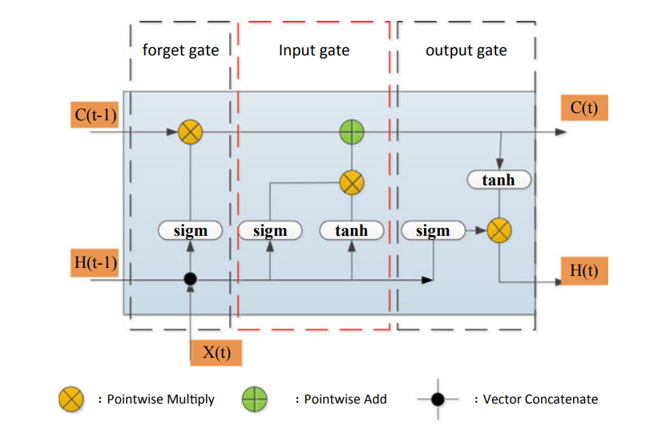
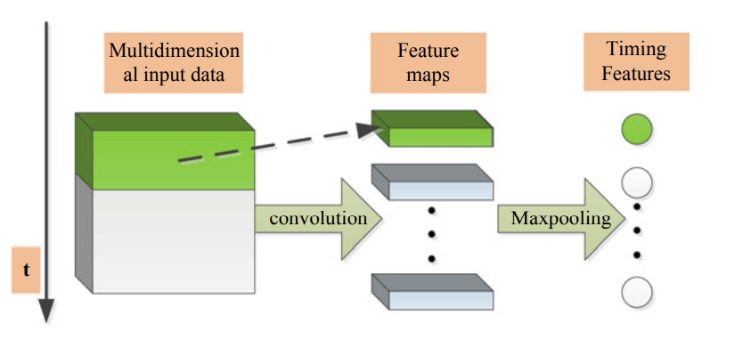
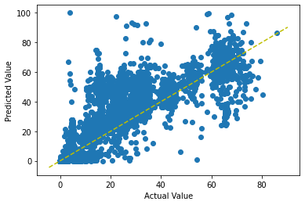
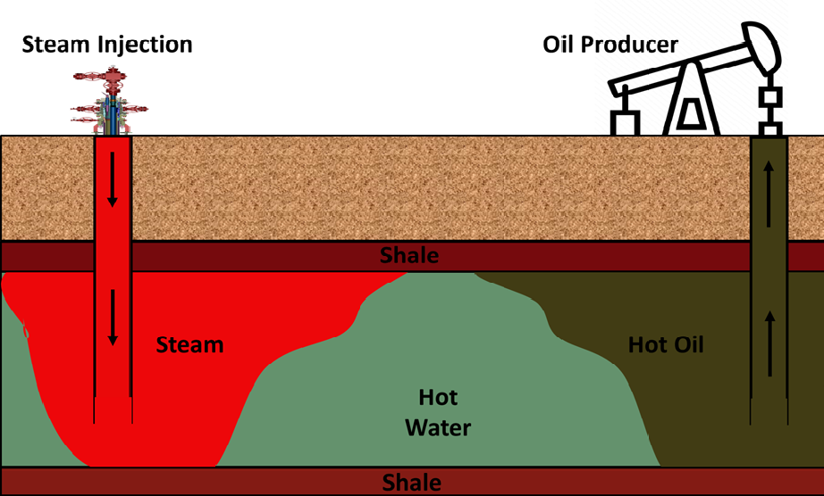
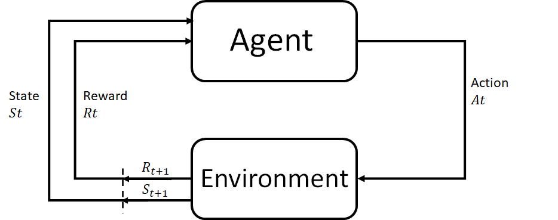
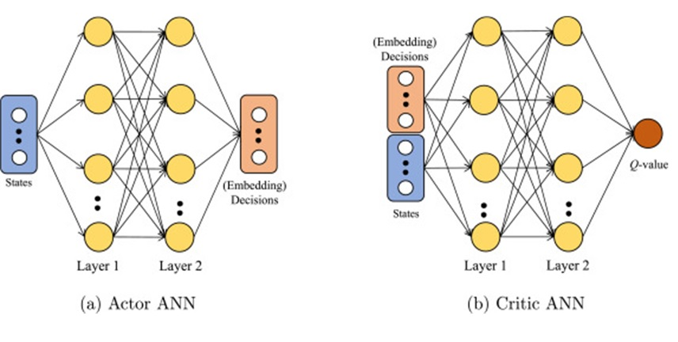
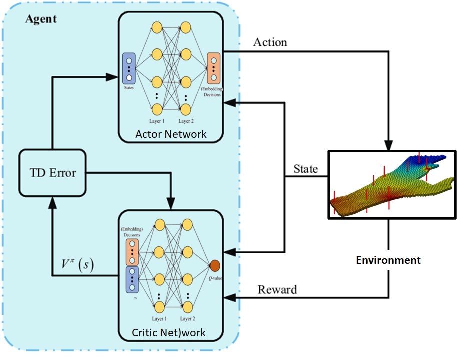
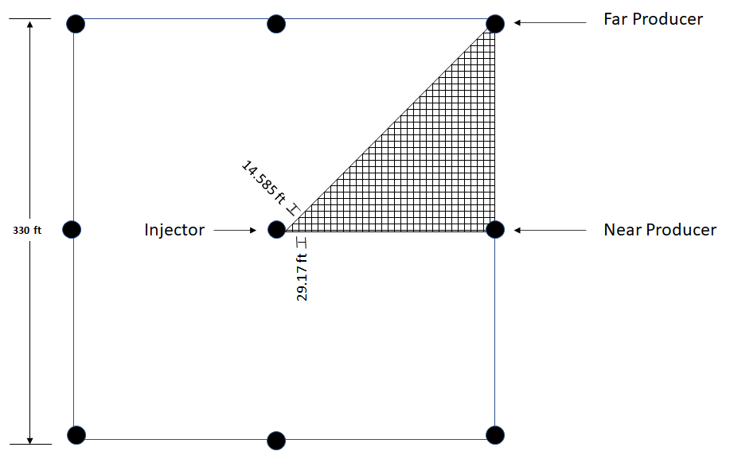
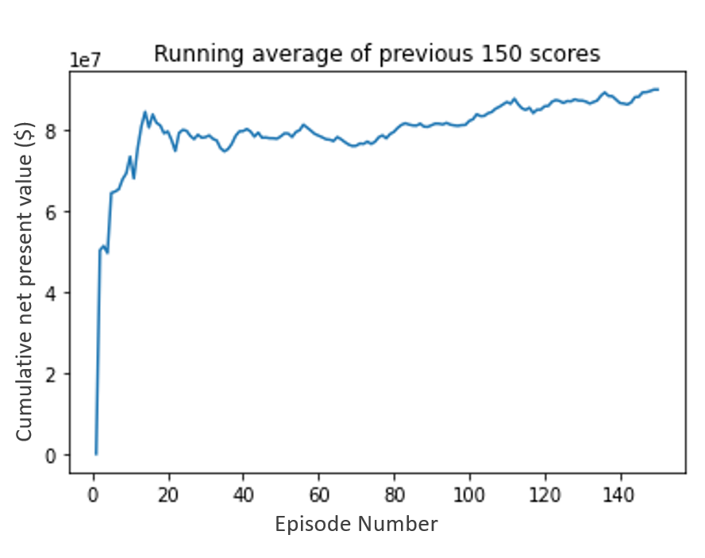

Geoscience Data Management & AI/ML Applications in Oil & Gas
Comprehensive overview of geoscience data structures, types, and classifications used in the oil and gas industry, along with cutting-edge applications of artificial intelligence and machine learning in drilling, production, and reservoir engineering.
Geoscience Data Management in Oil & Gas Operations
Overview: Effective data management is critical for modern oil and gas operations. Data from production and reservoir engineering activities can be categorized into distinct classes based on their nature, frequency of change, and role in decision-making processes. Understanding these data structures enables better analytics, modeling, and optimization of field operations.
Production Engineering Data Classification
Production engineering data encompasses all information related to wellbore completion, fluid properties, and operational parameters. This data is essential for monitoring well performance, optimizing artificial lift systems, and ensuring efficient hydrocarbon recovery.
| Data Category | Classification | Description & Parameters |
|---|---|---|
| Static Data | Wellbore Data Completion Class A |
|
| Depth Data | Fluid Properties Class B |
|
| Time Series Data | Operating Parameters Class C |
Parameters depend on well completion type:
These can be controlled, manipulated, or disturbance parameters |
Reservoir Engineering Data Classification
Reservoir engineering data includes geophysical, petrophysical, and fluid properties data that characterize the subsurface reservoir and guide field development strategies. This data spans from static reservoir characteristics to dynamic field response data collected during production.
| Data Category | Sub-Category | Parameters & Measurements |
|---|---|---|
| Reservoir Characteristics Data Class A |
Geophysical Data |
|
| Petrophysical Data |
|
|
| Fluid Properties |
|
|
| Rock/Fluid Interaction Data |
|
|
| Project Design Parameters Class B |
|
|
| Field Response Data Class C |
|
|
Data Integration & Usage
The integration of production and reservoir engineering data enables:
- Predictive Analytics: Forecasting production decline, equipment failures, and reservoir performance
- Prescriptive Analytics: Optimizing injection strategies, well controls, and field development plans
- Real-time Monitoring: Continuous surveillance of well and reservoir conditions
- Machine Learning Applications: Data-driven models for virtual flow metering, predictive maintenance, and production optimization
AI/ML Applications in Drilling Operations
Research Focus: Autonomous drilling control represents a paradigm shift in drilling operations, leveraging Internet of Things (IoT) technologies, real-time data analytics, and machine learning to enable intelligent, self-optimizing drilling systems. This research, conducted at the Digital Drilling Lab at Clausthal University of Technology, focuses on developing IoT-based systems for real-time monitoring, decision-making, and autonomous control of drilling rigs.
System Architecture & Components
The autonomous drilling system integrates multiple technological components working in concert:
Core System Components
- IoT Sensors: Real-time monitoring of critical drilling parameters including Weight on Bit (WOB), Revolutions Per Minute (RPM), torque, flow rate, and downhole pressure
- Data Acquisition Layer: MQTT (Message Queuing Telemetry Transport) protocol for efficient sensor data transmission with minimal latency
- Data Processing Backend: Django-based system with Redis caching for real-time data processing and storage
- Communication Infrastructure: WebSocket and ZeroMQ (ZMQ) protocols enabling low-latency data streaming between components
- Intelligent Decision Engine: Machine learning models for autonomous parameter optimization and decision-making
- User Interface: Real-time dashboards built with jQuery and modern web technologies for monitoring and control
Technology Stack
Backend Framework
Django (Python)
Robust web framework for data processing and API development
Caching & Storage
Redis
In-memory data store for ultra-fast data retrieval and caching
IoT Messaging
MQTT Protocol
Lightweight messaging protocol optimized for IoT sensor communication
Real-time Communication
WebSocket & ZeroMQ
Low-latency bidirectional communication channels
Frontend Interface
jQuery & Modern JavaScript
Interactive dashboards with real-time data visualization
Machine Learning
Python ML Libraries
Scikit-learn, TensorFlow for autonomous control algorithms
Research Objectives & Applications
Primary Research Objectives
- Develop comprehensive real-time monitoring systems for drilling operations
- Implement autonomous control algorithms for drilling parameter optimization
- Enable predictive maintenance capabilities for drilling equipment
- Improve drilling efficiency and operational safety through intelligent automation
- Reduce non-productive time (NPT) through early problem detection and prevention
Practical Applications
- Real-Time Monitoring: Continuous surveillance of drilling parameters with sub-second update frequencies, enabling immediate response to changing conditions
- Autonomous Control: Automatic adjustment of drilling parameters (WOB, RPM, mud flow rate) based on real-time formation characteristics and drilling dynamics
- Anomaly Detection: Early detection of drilling problems including stuck pipe incidents, lost circulation events, and abnormal pressure conditions
- Rate of Penetration (ROP) Optimization: Machine learning-driven optimization algorithms maximizing drilling speed while maintaining wellbore stability
- Safety Systems: Automated safety protocols preventing hazardous conditions such as kick detection, excessive torque, and equipment overload
Research Outcomes & Achievements
Key Achievements
- Developed comprehensive IoT-based monitoring system for drilling rigs with over 50 sensor integration points
- Achieved real-time data processing with latency under 100 milliseconds
- Created autonomous control algorithms demonstrating 15-20% improvement in drilling efficiency
- Demonstrated significant reduction in non-productive time through predictive analytics
- Established foundational framework for future digital drilling technology research
Future Research Directions
Next Generation Capabilities
- Digital Twin Integration: Virtual drilling operations enabling scenario testing and optimization before physical implementation
- Advanced Formation Recognition: Deep learning algorithms for real-time lithology identification and adaptive drilling response
- Federated Learning: Multi-rig knowledge sharing systems enabling collective learning from distributed drilling operations
- Cloud Platform Integration: Scalable cloud-based data processing using AWS, Azure, or Google Cloud for enhanced computational capabilities
- Reinforcement Learning Safety Systems: Self-improving safety protocols that learn from near-miss incidents and operational data
Collaboration & Leadership
Project conducted in collaboration with:
- Prof. Dr.-Ing. Philip Jäger - Head of Petroleum Production Systems Department, TU Clausthal
- Dr. Ing. Carlos Paz - Head of Digital Drilling Lab Technologies
AI/ML Applications in Production Engineering
Research Overview: Production engineering leverages machine learning and AI for two critical applications: predictive maintenance of artificial lift equipment (especially Electrical Submersible Pumps - ESPs) and virtual flow metering systems for real-time production rate estimation. These applications reduce operational costs, minimize downtime, and eliminate the need for expensive physical measurement equipment.
1. Predictive Maintenance for Electrical Submersible Pumps (ESPs)
Challenge & Motivation
ESP failures are a significant source of production loss and operational expense in the oil and gas industry. Traditional reactive maintenance approaches are costly and result in unexpected downtime. The key challenges include:
- ESPs operate in harsh downhole environments with complex fluid mixtures
- Fluid composition, pressure, and temperature undergo continuous changes
- Failures can be electrical (Motor Downhole Failures - MDHF) or mechanical
- Polymer deposition on motor body reduces heat dissipation, accelerating failure
- Traditional maintenance requires expensive workovers and production shutdowns
Data Collection & Preprocessing
Sensor Data Sources:
- FRQ: Motor Frequency (Hz)
- PDP: Pump Discharge Pressure (Psi)
- PIP: Pump Intake Pressure (Psi)
- WHP: Wellhead Pressure (Psi)
- WHT: Wellhead Temperature (°F)
- MT: Motor Temperature (°F)
- CHP: Casing Head Pressure (Psi)
- Current: Motor Current (Amperes)
Data Preprocessing Pipeline:
- Resampling: Moving median in one-hour intervals to reduce noise
- Outlier Removal: IQR-based outlier detection using boxplot analysis
- Upper Bound = Q3 + 1.5 × IQR
- Lower Bound = Q1 - 1.5 × IQR
- Standardization: Zero mean, unit variance scaling
- Feature Engineering: Moving difference calculation on sensor measurements
Data Classification:
- Normal Data: 339,089 data points - Regular operating conditions
- Pre-Workover: 1,728 data points - Seven days before failure event
- Workover: 288 data points - Day of failure event

Figure: Box plot visualization before outlier removal showing unreasonable measurements

Figure: Box plot after outlier removal showing cleaned data distribution

Figure: Box plot after standardization and normalization
Machine Learning Methodology
Principal Component Analysis (PCA) for Dimensionality Reduction:
PCA is applied as an unsupervised dimensionality reduction technique that preserves maximum information while reducing computational complexity. The process involves:
- Computing covariance matrix of the entire dataset
- Calculating eigenvalues and eigenvectors
- Selecting principal components explaining 95%+ variance
- Transforming original features into principal component space
XGBoost for Predictive Classification:
The PCA output is pipelined to an XGBoost (Extreme Gradient Boosting) classifier that predicts pre-workover events with the following capabilities:
- Identifies deeper functional relationships in historical data
- Captures longer-term trends leading to failure
- Provides early warning alarms 7 days before actual failure events
- Enables proactive maintenance scheduling
Outcomes & Impact
- 7-day advance warning before ESP failure events
- Significant reduction in unplanned downtime
- Optimized maintenance scheduling and resource allocation
- Reduced workover costs through planned interventions
- Extended ESP operational life through timely interventions
2. Virtual Flow Metering (VFM) Systems
Concept & Motivation
Virtual Flow Metering technology eliminates the need for expensive physical flow meters by using readily available sensor data and machine learning models to estimate production rates in real-time.
Limitations of Traditional Methods:
- Well Testing: Inadequate time resolution, requires stable conditions (hours), lacks real-time capability, expensive operation
- Multiphase Physical Flow Meters (MPFMs): High capital cost ($100k-$500k per unit), limited operating range, requires maintenance, susceptible to sand erosion and fouling
VFM Advantages:
- No additional hardware installation required
- Real-time flow rate estimation with continuous updates
- Significantly reduced capital and operational costs
- Can work standalone or complement MPFM systems
- Reflects changing flow conditions immediately
VFM Classification Paradigms
1. First Principles VFM (Physics-Based):
- Based on mechanistic modeling of multiphase flows
- Uses conservation equations and thermodynamic relationships
- Requires detailed knowledge of wellbore geometry, fluid properties
- Optimization algorithms minimize mismatch between model and measurements
- Used in most commercial VFM systems
2. Data-Driven VFM (Machine Learning):
- Fits mathematical models to field data without explicit physical parameters
- Lower development cost and implementation complexity
- Fast and accurate when operating within training data range
- Requires less domain expertise compared to physics-based models
Machine Learning Approach for ESP Wells
Input Features from ESP Sensors:
- Pump intake pressure and discharge pressure (Pintake, Pdischarge)
- Wellhead pressure and temperature (WHP, WHT)
- Choke opening (Cop)
- Pump vibration in X and Y directions (Vx, Vy)
- Variable speed drive current (IVSD)
- Motor frequency (FRQ)
Target Outputs:
- Oil production rate (bbl/day)
- Water production rate (bbl/day)
- Water cut percentage (%)
ML Algorithms Hierarchy
Algorithms arranged by complexity and explainability:
1. Multiple Linear Regression (MLR):
- Baseline model with high interpretability
- Linear relationships between sensors and flow rates
- Fast training and prediction
- Limited accuracy for complex non-linear relationships
2. XGBoost (Gradient Boosted Decision Trees):
- Ensemble learning method with high accuracy
- Captures non-linear relationships and feature interactions
- Feature importance analysis for interpretability
- Robust to outliers and missing data
- Moderate training time, fast prediction
3. Deep Learning - LSTM with CNN:
- LSTM (Long Short-Term Memory): Captures temporal dependencies and time-series patterns
- CNN (Convolutional Neural Network): Extracts spatial features from sensor data
- Highest accuracy for complex temporal patterns
- Can model dynamic system behavior
- Requires significant training data and computational resources
- Lower interpretability (black box model)

Figure: Correlation analysis between sensor measurements and production rates

Figure: LSTM neural network architecture for time-series flow rate prediction

Figure: 1D Convolutional Neural Network structure for feature extraction

Figure: XGBoost model performance for water rate prediction
VFM Performance & Benefits
- Real-time production monitoring for all wells
- Typical accuracy: ±5-10% for oil rate, ±3-8% for water cut
- Immediate detection of production changes and anomalies
- Enables data-driven production optimization
- Reduces dependence on periodic well testing
- Provides continuous data for reservoir management
AI/ML Applications in Reservoir Engineering
Research Focus: Reservoir engineering applications of AI/ML center on prescriptive analytics for enhanced oil recovery (EOR) optimization, specifically steam flooding and waterflooding operations. Reinforcement Learning (RL) algorithms enable autonomous, adaptive control strategies that maximize cumulative production and net present value (NPV) without requiring explicit physical models or human intervention.
Steam Injection Optimization Using Reinforcement Learning
Steam Flooding Process
Steam flooding is a thermal enhanced oil recovery method where steam is injected into heavy oil reservoirs to reduce oil viscosity and improve displacement efficiency. The process involves:
- Steam forms a condensing zone and chamber around injection wells
- Heat of condensation reduces heavy crude oil viscosity
- Steam chamber expands toward production wells
- Condensed water displaces heated oil to production wells
- High steam costs necessitate injection rate optimization

Figure: Steam injection process showing steam chamber formation and oil displacement
Optimization Challenge
Steam injection optimization is complex due to:
- No single optimal injection rate for all situations
- Complex reservoir simulation involved in thermal processes
- Dynamic optimization required over entire production horizon
- Trade-off between steam costs and incremental oil recovery
- Changing reservoir conditions (pressure, temperature, saturation)
Traditional Optimization Approaches & Limitations:
- Evolutionary Algorithms (GA, PSO): Provide only single static value, not dynamic strategy
- Model Predictive Control (MPC): Requires proxy models, unstable for long horizons
- Adjoint-Based Methods: Requires hard-coding gradient equations, complex for compositional models
Reinforcement Learning Approach
Why Reinforcement Learning?
- Does not require full description of the process to be optimized (model-free)
- Learns from interactions with environment (reservoir simulator)
- Discovers optimal policy through trial and error
- Maximizes long-term cumulative reward (NPV) without human intervention
- Adapts to changing reservoir conditions

Figure: Agent-environment interaction in Reinforcement Learning framework
RL Framework Components
1. Environment:
- Reservoir simulation model (compositional simulator)
- Represents physical behavior of steam injection and oil displacement
- Returns state information and rewards based on actions
2. State (st):
- Current reservoir conditions: pressure distributions, temperature, saturations
- Production/injection rates from all wells
- Cumulative oil produced, water cut, steam injected
3. Action (at):
- Steam injection rates for all injection wells
- Continuous control variables within operational constraints
4. Reward (rt):
- Net Present Value (NPV) = Revenue from oil - Cost of steam - Operating costs
- Immediate economic return at each time step
5. Policy (π):
- Mapping from states to actions: π(a|s)
- Learned through neural network
- Optimal policy π* maximizes expected cumulative reward
6. Value Function (Vπ(s)):
- Expected cumulative reward starting from state s
- Evaluates long-term desirability of states
- Considers future states and rewards with discount factor γ
Advantage Actor-Critic (A2C) Algorithm
The research employs A2C algorithm, which combines value-based and policy-based approaches:
Actor Network:
- Policy gradient algorithm that generates actions
- Neural network parameterized by θ: π(a|s; θ)
- Learns to select actions that maximize cumulative reward
Critic Network:
- Evaluates Q-value or state value function
- Provides feedback on action quality
- Approximates V(s) to estimate expected return
Advantage Function:
- A(s, a) = Q(s, a) - V(s)
- Measures how much better action a is compared to average
- Reduces variance in policy gradient estimates
- Calculated as TD error: rt + γV(st+1) - V(st)
Training Process:
- Actor proposes action based on current policy
- Environment simulates reservoir response
- Critic evaluates the action using advantage function
- Actor updates policy in direction of higher advantage
- Critic updates value estimates to reduce prediction error
- Process repeats until convergence to optimal policy

Figure: Actor-Critic neural network architecture

Figure: A2C algorithm process flow for steam injection optimization
Reservoir Simulation Setup
Simulation Model Specifications
Reservoir Configuration:
- One-eighth of inverted nine-spot pattern (symmetry element)
- Total area: 2.5 acres
- Grid system: 23 × 12 × 12 (3,312 grid cells)
- Well radius: 0.3 ft for all wells
Rock Properties:
- Vertical permeability: 50% of horizontal permeability
- Porosity: 0.3 (fraction) for all layers
- Thermal conductivity: 24 BTU/(ft-D-°F)
- Heat capacity: 35 BTU/(ft³-°F)
- Rock compressibility: 5×10⁻⁴ psi⁻¹
Fluid Properties:
- Oil density at standard conditions: 60.68 lbm/ft³
- Oil compressibility: 5×10⁻⁶ psi⁻¹
- Thermal expansion coefficient: 3.8×10⁻⁴ °F⁻¹
- Molecular weight: 600
- Temperature-dependent viscosity (heavy oil characteristics)

Figure: Three-element symmetry used in simulation of steam injection in inverted nine-spot pattern
Results & Performance
Training Performance
The RL agent learns optimal injection strategies through iterative episodes:
- Learning curve shows convergence to optimal policy
- Initial exploration phase with high variance
- Gradual improvement in cumulative NPV
- Stabilization indicates learned optimal strategy

Figure: RL agent learning curve showing convergence to optimal policy
Production Performance Metrics
Comparison of RL-optimized strategy vs. conventional constant injection:
.png)
Figure: Field Oil Production Rate (FOPR) comparison
.png)
Figure: Field Oil Production Total (FOPT) - Cumulative oil production
.png)
Figure: Field Water Cut (FWCT) evolution over time
.png)
Figure: Field Water Injection Total (FWIT) - Cumulative steam injected
Key Achievements & Benefits
- Improved Recovery Efficiency: Higher cumulative oil production compared to conventional strategies
- Optimized Steam Usage: Reduced steam consumption while maintaining production levels
- Maximized NPV: Better economic performance through dynamic injection control
- Adaptive Control: Strategy automatically adjusts to changing reservoir conditions
- No Manual Intervention: Fully autonomous optimization without engineering oversight
- Transferable Framework: Methodology applicable to other EOR processes (waterflooding, CO₂ injection)
Extensions to Waterflooding & Other EOR Methods
Waterflooding Optimization
Similar RL framework applies to waterflooding projects:
- Optimize water injection rates across multiple injection wells
- Balance sweep efficiency vs. water breakthrough
- Multi-agent RL for decentralized well-by-well control
- Demonstrated 15% improvement in recovery efficiency
- 30% cost reduction in field trials
Future Research Directions
- Multi-Agent RL: Coordinated control of multiple injection/production wells
- Physics-Informed RL: Incorporate physical constraints and domain knowledge
- Transfer Learning: Apply learned policies from one field to similar reservoirs
- Real-Time Implementation: Deploy RL agents in actual field operations
- Uncertainty Quantification: Robust optimization under geological uncertainty
- Digital Twins: Integrate RL with reservoir digital twins for scenario testing